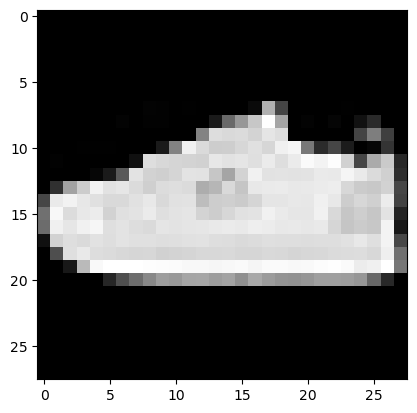

import torch
import torchvision
import matplotlib.pyplot as plt
import pandas as pd
from fastai.data.all import *
from fastai.vision.all import * 3. torch.eigensum
3. torch.eigensum
A. transpose
tsr = torch.tensor([1,2,3,4,5,6]).reshape(3,2)
tsr tensor([[1, 2],
[3, 4],
[5, 6]])tsr.t()tensor([[1, 3, 5],
[2, 4, 6]])torch.einsum('ij -> ji',tsr) tensor([[1, 3, 5],
[2, 4, 6]])B. 행렬곱
tsr1 = torch.tensor([1,2,3,4,5,6]).reshape(3,2)/6
tsr1 tensor([[0.1667, 0.3333],
[0.5000, 0.6667],
[0.8333, 1.0000]])tsr2 = torch.tensor([1,2.0]).reshape(2,1)
tsr2tensor([[1.],
[2.]])tsr1 @ tsr2tensor([[0.8333],
[1.8333],
[2.8333]])torch.einsum('ij,jk -> ik',tsr1,tsr2) tensor([[0.8333],
[1.8333],
[2.8333]])C. 이미지변환
r = torch.zeros(16).reshape(4,4) + 1.0
g = torch.zeros(16).reshape(4,4)
b = torch.zeros(16).reshape(4,4)img = torch.stack([r,g,b],axis=0).reshape(1,3,4,4)
imgtensor([[[[1., 1., 1., 1.],
[1., 1., 1., 1.],
[1., 1., 1., 1.],
[1., 1., 1., 1.]],
[[0., 0., 0., 0.],
[0., 0., 0., 0.],
[0., 0., 0., 0.],
[0., 0., 0., 0.]],
[[0., 0., 0., 0.],
[0., 0., 0., 0.],
[0., 0., 0., 0.],
[0., 0., 0., 0.]]]])img.shapetorch.Size([1, 3, 4, 4])plt.imshow(torch.einsum('ocij -> ijc',img))
plt.imshow(torch.stack([r,g,b],axis=-1))
4. MNIST – 직접설계
path = untar_data(URLs.MNIST)
X0 = torch.stack([torchvision.io.read_image(str(fname)) for fname in (path/'training/0').ls()])
X1 = torch.stack([torchvision.io.read_image(str(fname)) for fname in (path/'training/1').ls()])
X2 = torch.stack([torchvision.io.read_image(str(fname)) for fname in (path/'training/2').ls()])
X = torch.concat([X0,X1,X2])/255
y = torch.nn.functional.one_hot(torch.tensor([0]*len(X0) + [1]*len(X1) + [2]*len(X2))).float()
X0 = torch.stack([torchvision.io.read_image(str(fname)) for fname in (path/'testing/0').ls()])
X1 = torch.stack([torchvision.io.read_image(str(fname)) for fname in (path/'testing/1').ls()])
X2 = torch.stack([torchvision.io.read_image(str(fname)) for fname in (path/'testing/2').ls()])
XX = torch.concat([X0,X1,X2])/255
yy = torch.nn.functional.one_hot(torch.tensor([0]*len(X0) + [1]*len(X1) + [2]*len(X2))).float()print(X.shape,'\t',X.dtype)
print(y.shape,'\t\t',y.dtype)
print(XX.shape,'\t',XX.dtype)
print(yy.shape,'\t\t',yy.dtype)torch.Size([18623, 1, 28, 28]) torch.float32
torch.Size([18623, 3]) torch.float32
torch.Size([3147, 1, 28, 28]) torch.float32
torch.Size([3147, 3]) torch.float32A. y: (n,3)-float
# step1: 데이터의 정리
ds1 = torch.utils.data.TensorDataset(X,y)
#ds2 = torch.utils.data.TensorDataset(XX,yy)
dl1 = torch.utils.data.DataLoader(ds1,batch_size=128)
#dl2 = torch.utils.data.DataLoader(ds2)
# step2: 학습에 필요한 오브젝트들을 선언
torch.manual_seed(43052)
net = torch.nn.Sequential(
torch.nn.Conv2d(1,16,kernel_size=(2,2)),
torch.nn.ReLU(),
torch.nn.MaxPool2d(kernel_size=(2,2)),
torch.nn.Flatten(),
torch.nn.Linear(2704,3)
)
loss_fn = torch.nn.CrossEntropyLoss()
optimizr = torch.optim.Adam(net.parameters())
# step3: 학습을 하는 과정 = 적합을 하는 과정
net.to("cuda:0")
for epoc in range(8):
for xi,yi in dl1:
## 1
## 2
loss = loss_fn(net(xi.to("cuda:0")),yi.to("cuda:0"))
## 3
loss.backward()
## 4
optimizr.step()
optimizr.zero_grad()
## step4:
net.to("cpu")
print(f'train = {(net(X).argmax(axis=-1) == y.argmax(axis=-1)).float().mean():.4f}')
print(f'val = {(net(XX).argmax(axis=-1) == yy.argmax(axis=-1)).float().mean():.4f}')train = 0.9410
val = 0.9431B. y: (n,)-int
y = y.argmax(axis=-1)
yy = yy.argmax(axis=-1)print(X.shape,'\t',X.dtype)
print(y.shape,'\t\t',y.dtype)
print(XX.shape,'\t',XX.dtype)
print(yy.shape,'\t\t',yy.dtype)torch.Size([18623, 1, 28, 28]) torch.float32
torch.Size([18623]) torch.int64
torch.Size([3147, 1, 28, 28]) torch.float32
torch.Size([3147]) torch.int64# step1: 데이터의 정리
ds1 = torch.utils.data.TensorDataset(X,y)
#ds2 = torch.utils.data.TensorDataset(XX,yy)
dl1 = torch.utils.data.DataLoader(ds1,batch_size=128)
#dl2 = torch.utils.data.DataLoader(ds2)
# step2: 학습에 필요한 오브젝트들을 선언
torch.manual_seed(43052)
net = torch.nn.Sequential(
torch.nn.Conv2d(1,16,kernel_size=(2,2)),
torch.nn.ReLU(),
torch.nn.MaxPool2d(kernel_size=(2,2)),
torch.nn.Flatten(),
torch.nn.Linear(2704,3)
)
loss_fn = torch.nn.CrossEntropyLoss()
optimizr = torch.optim.Adam(net.parameters())
# step3: 학습을 하는 과정 = 적합을 하는 과정
net.to("cuda:0")
for epoc in range(8):
for xi,yi in dl1:
## 1
## 2
loss = loss_fn(net(xi.to("cuda:0")),yi.to("cuda:0"))
## 3
loss.backward()
## 4
optimizr.step()
optimizr.zero_grad()
## step4:
net.to("cpu")
print(f'train = {(net(X).argmax(axis=-1) == y).float().mean():.4f}')
print(f'val = {(net(XX).argmax(axis=-1) == yy).float().mean():.4f}')train = 0.9410
val = 0.94315. Fashion-MNIST – fastai
- Data
df_train=pd.read_csv('https://media.githubusercontent.com/media/guebin/PP2023/main/posts/fashion-mnist_train.csv')
df_test=pd.read_csv('https://media.githubusercontent.com/media/guebin/PP2023/main/posts/fashion-mnist_test.csv')
def rshp(row):
return row.reshape(1,28,28)
X = torch.tensor(np.apply_along_axis(rshp,axis=1,arr=np.array(df_train.iloc[:,1:]))).float()
XX = torch.tensor(np.apply_along_axis(rshp,axis=1,arr=np.array(df_test.iloc[:,1:]))).float()
y = torch.tensor(np.array(df_train.label))
yy = torch.tensor(np.array(df_test.label))print(X.shape,'\t',X.dtype)
print(y.shape,'\t\t',y.dtype)
print(XX.shape,'\t',XX.dtype)
print(yy.shape,'\t\t',yy.dtype)torch.Size([60000, 1, 28, 28]) torch.float32
torch.Size([60000]) torch.int64
torch.Size([10000, 1, 28, 28]) torch.float32
torch.Size([10000]) torch.int64plt.imshow(torch.einsum('cij -> ijc', X[-1]),cmap='gray')
A. torch
# step1: 데이터의 정리
ds1 = torch.utils.data.TensorDataset(X,y)
#ds2 = torch.utils.data.TensorDataset(XX,yy)
dl1 = torch.utils.data.DataLoader(ds1,batch_size=128)
#dl2 = torch.utils.data.DataLoader(ds2)
# step2: 학습에 필요한 오브젝트들을 선언
torch.manual_seed(43052)
net = torch.nn.Sequential(
torch.nn.Conv2d(1,16,kernel_size=(2,2)),
torch.nn.ReLU(),
torch.nn.MaxPool2d(kernel_size=(2,2)),
torch.nn.Flatten(),
torch.nn.Linear(2704,10)
)
loss_fn = torch.nn.CrossEntropyLoss()
optimizr = torch.optim.Adam(net.parameters())
# step3: 학습을 하는 과정 = 적합을 하는 과정
net.to("cuda:0")
for epoc in range(8):
for xi,yi in dl1:
## 1
## 2
loss = loss_fn(net(xi.to("cuda:0")),yi.to("cuda:0"))
## 3
loss.backward()
## 4
optimizr.step()
optimizr.zero_grad()
## step4:
net.to("cpu")
print(f'train = {(net(X).argmax(axis=-1) == y).float().mean():.4f}')
print(f'val = {(net(XX).argmax(axis=-1) == yy).float().mean():.4f}')train = 0.9123
val = 0.8814B. fastai
# step1: 데이터의 정리
ds1 = torch.utils.data.TensorDataset(X,y)
ds2 = torch.utils.data.TensorDataset(XX,yy)
dl1 = torch.utils.data.DataLoader(ds1,batch_size=128)
dl2 = torch.utils.data.DataLoader(ds2,batch_size=10000)
dls = DataLoaders(dl1,dl2)
# step2: 학습에 필요한 오브젝트들을 선언
torch.manual_seed(43052)
net = torch.nn.Sequential(
torch.nn.Conv2d(1,16,kernel_size=(2,2)),
torch.nn.ReLU(),
torch.nn.MaxPool2d(kernel_size=(2,2)),
torch.nn.Flatten(),
torch.nn.Linear(2704,10)
)
loss_fn = torch.nn.CrossEntropyLoss()
lrnr = Learner(
dls = dls,
model = net,
loss_func = loss_fn,
#---#
metrics=[accuracy]
)
# step3: 학습을 하는 과정 = 적합을 하는 과정
lrnr.fit(10)
# step4
lrnr.model.to("cpu")
print(f'train = {(lrnr.model(X).argmax(axis=-1) == y).float().mean():.4f}')
print(f'val = {(lrnr.model(XX).argmax(axis=-1) == yy).float().mean():.4f}')| epoch | train_loss | valid_loss | accuracy | time |
|---|---|---|---|---|
| 0 | 1.607548 | 1.574934 | 0.820600 | 00:00 |
| 1 | 0.662993 | 0.607762 | 0.857900 | 00:00 |
| 2 | 0.378486 | 0.415697 | 0.873200 | 00:00 |
| 3 | 0.319998 | 0.396287 | 0.873900 | 00:01 |
| 4 | 0.287546 | 0.380723 | 0.879900 | 00:00 |
| 5 | 0.263219 | 0.379972 | 0.881700 | 00:00 |
| 6 | 0.249302 | 0.380660 | 0.880100 | 00:00 |
| 7 | 0.237593 | 0.387451 | 0.882500 | 00:00 |
| 8 | 0.231009 | 0.397792 | 0.880500 | 00:00 |
| 9 | 0.224454 | 0.401126 | 0.880400 | 00:01 |
train = 0.9139
val = 0.88046. ImageNet – 직접설계/transfer
A. 알렉스넷(Krizhevsky, Sutskever, and Hinton 2012)의 의미
Krizhevsky, Alex, Ilya Sutskever, and Geoffrey E Hinton. 2012. “Imagenet Classification with Deep Convolutional Neural Networks.” Advances in Neural Information Processing Systems 25.
- 야사로 배우는 인공지능: https://brunch.co.kr/@hvnpoet/109
B. 알렉스넷의 아키텍처 써보기
- 알렉스넷의 아키텍처:

- 재미삼아 써보면..
C. 알렉스넷으로 ImageNet 적합 – HW
pass